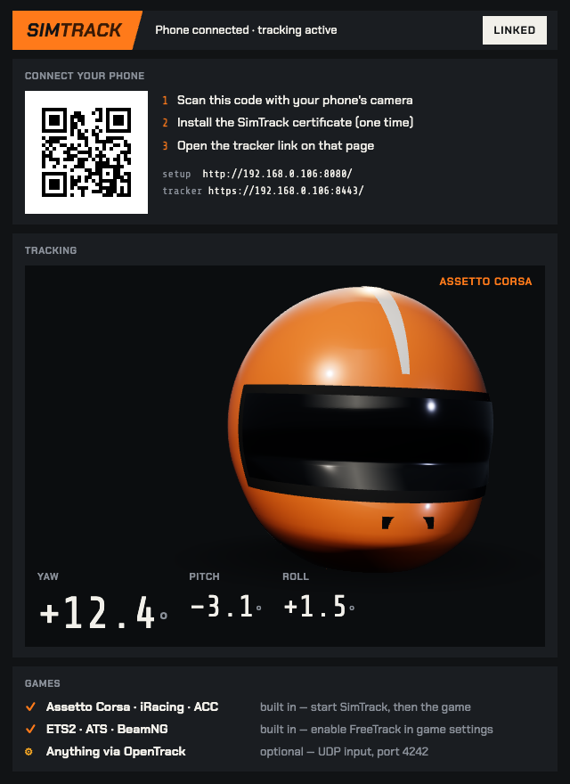
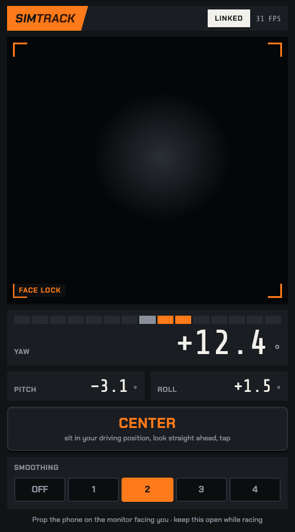

Prop it on the monitor. Open a link. Your in-game view follows your head — into the corner, at the mirror, over the shoulder. Nothing else to install on the phone or the PC.

The face tracking runs in your phone's browser. Three angles a frame travel over your own WiFi to the PC, which hands them to the game the same way TrackIR or FreeTrack hardware would.
Unzip, double-click. A window opens with a QR code.
Your phone installs a small certificate so its camera is allowed to work over your local network. About a minute, never again.
Tap Center while looking straight ahead. Drive. Games pick it up automatically.

SimTrack speaks both standard head-tracking protocols directly — no OpenTrack in between. "Verified" means a real person ran it in that game this month. If yours doesn't work, refund, no questions.
Tested on the developer's rig. This list grows from the works-with channel on Discord.
Standard TrackIR or FreeTrack support. Not yet confirmed by a tester — be the first.
Optional. SimTrack also sends UDP on port 4242 for people who already run OpenTrack profiles.
No subscription. Updates during early access are included. The founder's price ends when early access does.
Windows 10/11 PC · iPhone or Android with a front camera · both on the same WiFi.
Secure checkout by Lemon Squeezy · VAT included where it applies · license key by email.
No. It's a web page served by your own PC. You install one small certificate once so the camera is allowed, then it's a bookmark — add it to your home screen.
Phone browsers only allow the camera on secure links. SimTrack creates its own secure link to your PC — nothing goes through the internet. Installing the certificate is you telling your phone to trust your own PC. The setup page walks you through it for iPhone and Android.
No. The face tracking runs on the phone. Only three angles per frame travel over your WiFi to your PC. There's no account and no cloud.
Anything that supports TrackIR or FreeTrack head tracking, which is most PC sims. See the list above. If yours doesn't work, refund within 14 days.
TrackIR is dedicated infrared hardware and it's excellent. SimTrack tracks three axes — turn, nod, tilt — from a phone camera. For looking into corners and checking mirrors it does the job; it's not a €150 IR sensor and doesn't pretend to be.
A little — it's a camera over WiFi. Same WiFi network, 5 GHz, and a phone from the last few years keep it comfortable. The smoothing switch trades steadiness for speed.
Early-access builds may not be code-signed yet: click More info → Run anyway. Also click Allow on the firewall prompt, or your phone can't reach the PC.
Windows PC only. Consoles can't take head-tracking input. VR headsets track your head themselves.
Yes — camera plus face tracking is heavy. Plug it in for long sessions. SimTrack keeps the screen awake by itself.
Yes. The key is yours; use it on your own machines.
Rare, and a one-line fix: a config.json next to SimTrack.exe with {"invert_yaw": true} (or pitch, or roll). Ask in Discord and we'll sort it in minutes.
14 days, any reason, through the store you bought from. If it didn't work in your game, tell us which — that's how the verified list grows.
Early access means exactly that: it works, it's tested by real drivers on real rigs, and it's still being improved every week. You're buying the product and a say in where it goes.